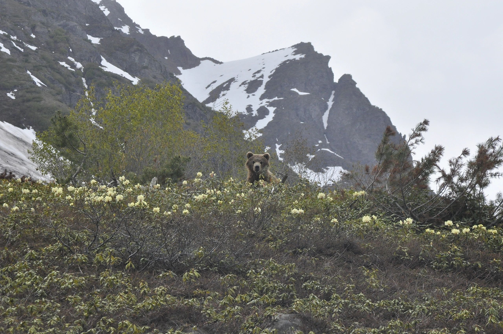
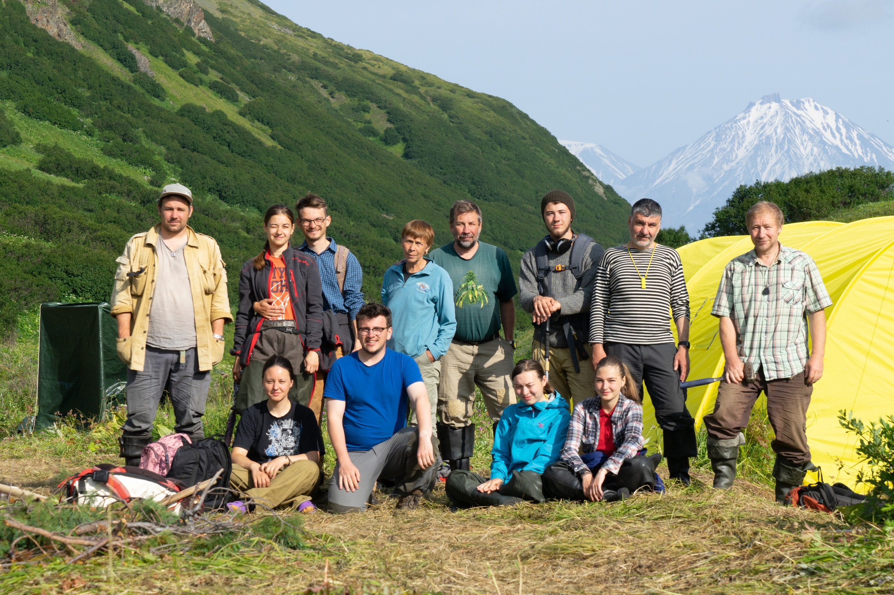
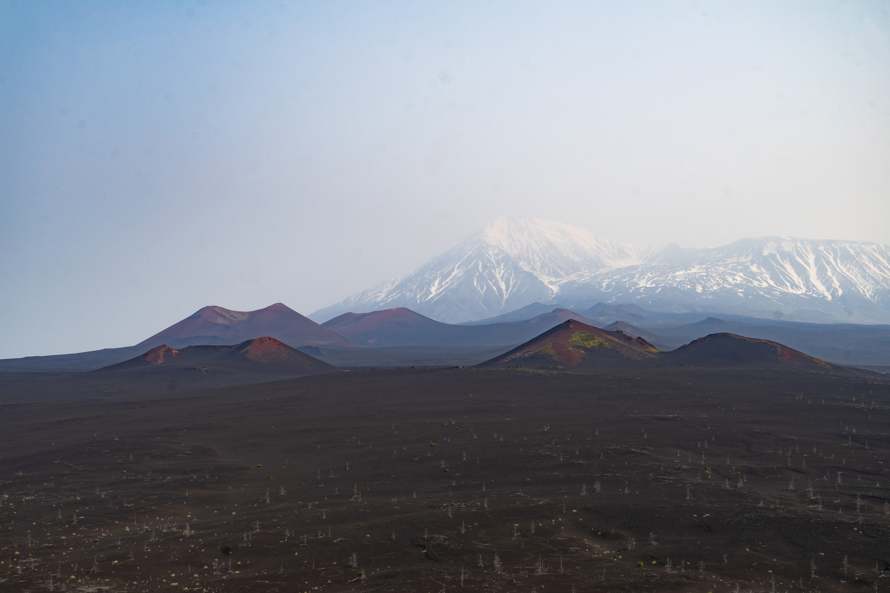
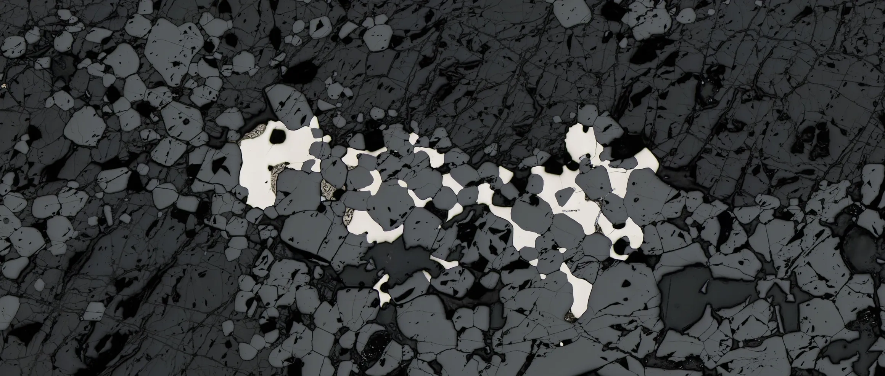
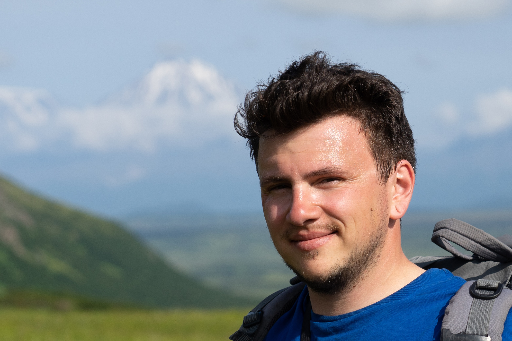

Photography
Field and mineral photography
I have already pulled the first batch of photographs from the older site folder, so this page now works as a real preview rather than a placeholder.
Imported gallery
Imported gallery
Cover
Strong homepage material and a good anchor image for the site.

Bear
A memorable field image with wildlife and mountain context.

Ridge
Useful for research pages, fieldwork narratives, and the homepage.

Valley
Good wide-format imagery for section breaks and gallery highlights.

Minerals
Microscale texture imagery for mineralogy and publication-related pages.

PGE
A wide image suited to banner areas and research highlights.
Portraits
Selected portraits

Main portrait
Strong close portrait for the homepage and profile sections.

Field portrait
A wider portrait that keeps the landscape and field setting in view.